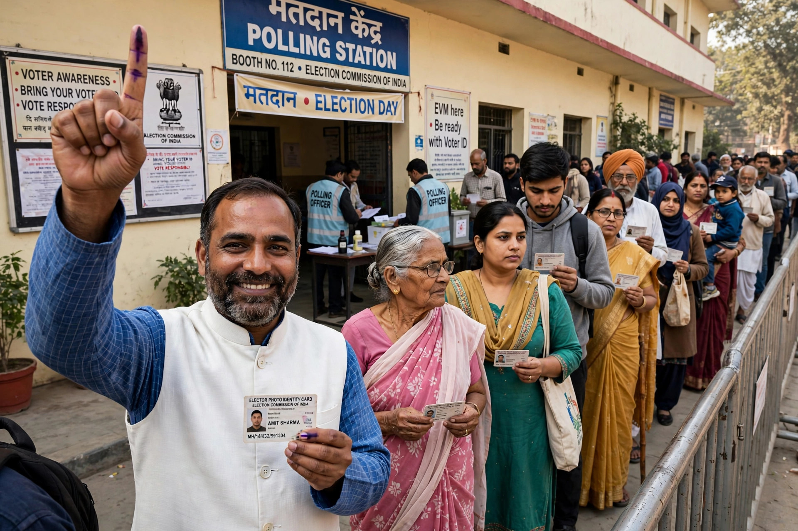

Elections in India are conducted for the Lok Sabha (the lower house of Parliament), the state legislative assemblies, and local bodies, in the world's largest democratic exercises. Under Article 324 of the Constitution, elections to Parliament and the state legislatures are administered by the Election Commission of India, an autonomous constitutional authority headed by the Chief Election Commissioner. Members of the Rajya Sabha and the President and Vice President are elected indirectly by elected representatives.
India uses the first-past-the-post system for the Lok Sabha's 543 elected seats and for state assemblies. Every citizen aged 18 or over may vote — the voting age was lowered from 21 by the 61st Amendment in 1988 — and seats are reserved in legislatures for Scheduled Castes and Scheduled Tribes. Voting is conducted on electronic voting machines (EVMs), first used experimentally in 1982 and nationwide from 2004, supplemented since 2013 by a voter-verified paper audit trail (VVPAT). A Model Code of Conduct governs campaigning from the announcement of the schedule; voters may also choose the "None of the Above" (NOTA) option, introduced in 2013.
The first general election after independence was held in 1951–52, when Sukumar Sen was Chief Election Commissioner. General elections require polling in multiple phases over several weeks so that security forces can be moved around the country. The 2024 general election was the largest ever held anywhere: about 968 million people were eligible to vote, roughly 642 million ballots were cast over seven phases between 19 April and 1 June, and the results, declared on 4 June, returned the Bharatiya Janata Party-led National Democratic Alliance to power, with Narendra Modi becoming Prime Minister for a third term, although the BJP itself fell short of a single-party majority. Turnout has generally been in the range of 60–67 percent in recent general elections. Debate continues over proposals for simultaneous elections to the Lok Sabha and the state assemblies ("One Nation, One Election"), and in February 2024 the Supreme Court struck down the electoral bonds scheme for anonymous corporate political funding as unconstitutional.